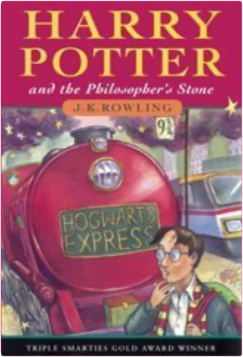

harry potter, tome 1 : harry potter and the philosopher's stonej. k. rowling 5 Visit the Harry Potter Store
Our Harry Potter Store features all things Harry, including books, audio CDs, DVDs, soundtracks, games, and more.
Begin at the Beginning
Adult editions Harry Potter and the Philosopher's Stone
(Book 1)
Paperback
Hardback
Harry Potter and the Chamber of Secrets
(Book 2)
Paperback
Hardback Harry Potter and the Prisoner of Azkaban
(Book 3)
Paperback
Hardback Harry Potter and the Goblet of Fire
(Book 4)
Paperback
Hardback Harry Potter and the Order of the Phoenix
(Book 5)
Paperback
Hardback Harry Potter and the Half-Blood Prince
(Book 6)
Paperback
Hardback Harry Potter and the deathly hallows
(Book 7)
Réservez-le dès maintenant
Children's hardback edition Harry Potter and the Philosopher's Stone
(Book 1)
Harry Potter and the Chamber of Secrets
(Book 2)
Harry Potter and the Prisoner of Azkaban
(Book 3)
Harry Potter and the Goblet of Fire
(Book 4)
Harry Potter and the Order of the Phoenix
(Book 5)
Harry Potter and the Half-Blood Prince
(Book 6)
Harry Potter and the deathly hallows
(Book 7)
Réservez-le dès maintenant Special edition
Harry Potter and the Philosopher's Stone
(Book 1)
Harry Potter and the Chamber of Secrets
(Book 2)
Harry Potter and the Prisoner of Azkaban
(Book 3)
Harry Potter and the Goblet of Fire
(Book 4)
Harry Potter and the Order of the Phoenix
(Book 5)
Harry Potter and the Half-Blood Prince
(Book 6)
Why We Love Harry
Favorite Moments from the Series
There are plenty of reasons to love Rowling's wildly popular series—no doubt you have several dozen of your own. Our list features favorite moments, characters, and artifacts from the first five books. Keep in mind that this list is by no means exhaustive (what we love about Harry could fill ten books!) and does not include any of the spectacular revelatory moments that would spoil the books for those (few) who have not read them. Enjoy.
Harry Potter and the Philosopher's Stone
* Harry's first trip to the zoo with the Dursleys, when a boa constrictor winks at him.
* When the Dursleys' house is suddenly besieged by letters for Harry from Hogwarts. Readers learn how much the Dursleys have been keeping from Harry. Rowling does a wonderful job in displaying the lengths to which Uncle Vernon will go to deny that magic exists.
* Harry's first visit to Diagon Alley with Hagrid. Full of curiosities and rich with magic and marvel, Harry's first trip includes a trip to Gringotts and Ollivanders, where Harry gets his wand (holly and phoenix feather) and discovers yet another connection to He-Who-Must-No-Be-Named. This moment is the reader's first full introduction to Rowling's world of witchcraft and wizards.
* Harry's experience with the Sorting Hat.
Harry Potter and the Chamber of Secrets
* The de-gnoming of the Weasleys' garden. Harry discovers that even wizards have chores—gnomes must be grabbed (ignoring angry protests "Gerroff me! Gerroff me!"), swung about (to make them too dizzy to come back), and tossed out of the garden—this delightful scene highlights Rowling's clever and witty genius.
* Harry's first experience with a Howler, sent to Ron by his mother.
* The Dueling Club battle between Harry and Malfoy. Gilderoy Lockhart starts the Dueling Club to help students practice spells on each other, but he is not prepared for the intensity of the animosity between Harry and Draco. Since they are still young, their minibattle is innocent enough, including tickling and dancing charms.
Harry Potter and the Prisoner of Azkaban
* Ron's attempt to use a telephone to call Harry at the Dursleys'.
* Harry's first encounter with a Dementor on the train (and just about any other encounter with Dementors). Harry's brush with the Dementors is terrifying and prepares Potter fans for a darker, scarier book.
* Harry, Ron, and Hermione's behavior in Professor Trelawney's Divination class. Some of the best moments in Rowling's books occur when she reminds us that the wizards-in-training at Hogwarts are, after all, just children. Clearly, even at a school of witchcraft and wizardry, classes can be boring and seem pointless to children.
* The Boggart lesson in Professor Lupin's classroom.
* Harry, Ron, and Hermione's knock-down confrontation with Snape.
Harry Potter and the Goblet of Fire
* Hermione's disgust at the reception for the veela (Bulgarian National Team Mascots) at the Quidditch World Cup. Rowling's fourth book addresses issues about growing up—the dynamic between the boys and girls at Hogwarts starts to change. Nowhere is this more plain than the hilarious scene in which magical cheerleaders nearly convince Harry and Ron to jump from the stands to impress them.
* Viktor Krum's crush on Hermione—and Ron's objection to it.
* Malfoy's "Potter Stinks" badge.
* Hermione's creation of S.P.E.W., the intolerant bigotry of the Death Eaters, and the danger of the Triwizard Tournament. Add in the changing dynamics between girls and boys at Hogwarts, and suddenly Rowling's fourth book has a weight and seriousness not as present in early books in the series. Candy and tickle spells are left behind as the students tackle darker, more serious issues and take on larger responsibilities, including the knowledge of illegal curses.
Harry Potter and the Order of the Phoenix
* Harry's outburst to his friends at No. 12 Grimmauld Place. A combination of frustration over being kept in the dark and fear that he will be expelled fuels much of Harry's anger, and it all comes out at once, directly aimed at Ron and Hermione. Rowling perfectly portrays Harry's frustration at being too old to shirk responsibility, but too young to be accepted as part of the fight that he knows is coming.
* Harry's detention with Professor Umbridge. Rowling shows her darker side, leading readers to believe that Hogwarts is no longer a safe haven for young wizards. Dolores represents a bureaucratic tyrant capable of real evil, and Harry is forced to endure their private battle of wills alone.
* Harry and Cho's painfully awkward interactions. Rowling clearly remembers what it was like to be a teenager.
* Harry's Occlumency lessons with Snape.
* Dumbledore's confession to Harry.
Harry Potter and the Half-Blood Prince
* A darker book than any in the series thus far with a level of sophistication belying its genre, Harry Potter and the Half-Blood Prince moves the series into murkier waters and marks the arrival of Rowling onto the adult literary scene. While she has long been praised for her cleverness and wit, the strength of Book 6 lies in her subtle development of key characters, as well as her carefully nuanced depiction of a community at war. In Harry Potter and the Half-Blood Prince, no one and nothing is safe, including preconceived notions of good and evil and of right and wrong. With each book in her increasingly remarkable series, fans have nervously watched J.K. Rowling raise the stakes; gone are the simple delights of butterbeer and enchanted candy, and days when the worst ailment could be cured by a bite of chocolate. A series that began as a colorful lark full of magic and discovery has become a dark and deadly war zone.
Magic, Mystery, and Mayhem: A Conversation with J.K. Rowling
"I am an extraordinarily lucky person, doing what I love best in the world. I’m sure that I will always be a writer. It was wonderful enough just to be published. The greatest reward is the enthusiasm of the readers." —J.K. Rowling
Find out more about Harry's creator in our exclusive interview with J.K. Rowling. |


 Made with Delicious Library
Made with Delicious Library